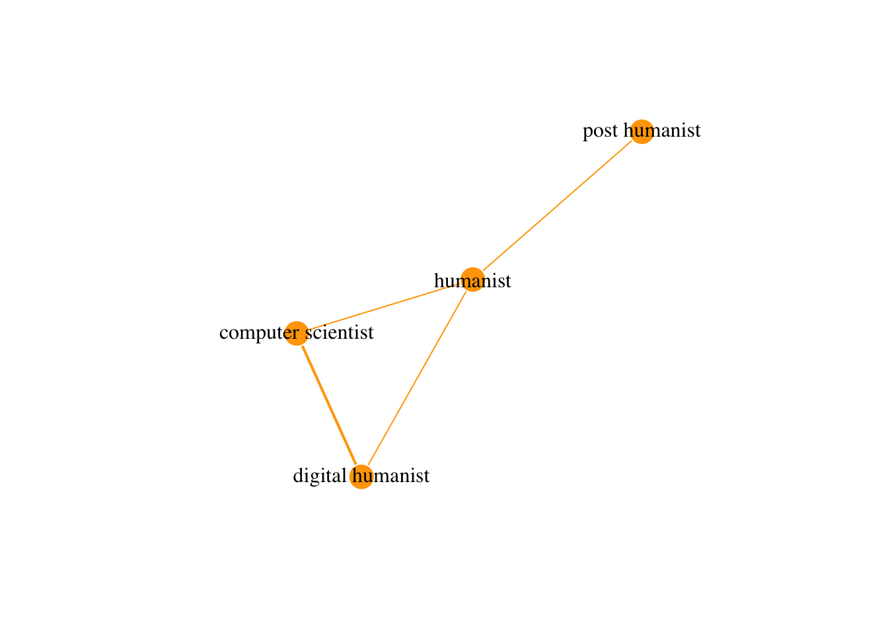

Week 2, Class 1: Acquiring and Working With Network Data
Introduction
The topic of the second week is data. We will present the data sets available for the final project of the course, and give some practical examples of the kinds of networks that can be derived from them. We will also start discussing the data wrangling steps that are necessary to transform a given data set to a network data set.
Presenting Networks as Data
Before jumping into discussing data, we quickly introduce few terms terms that are helpful for understanding how data sets of various sorts can be converted to networks.
Network is made of nodes and edges, so both need to be defined in machine-readable form. Although not necessary in all presentations of network data, node list is a good starting point. It is a table on N rows and C columns, where N is the number of nodes in your data. Each row, then has information about one node. One of the columns is reserved for the identifier of your nodes (a value that defines the node uniquely, think of it as the social security number of the node), the rest are optional. For example, a node list for a social network of humans would have an identifier node at one column of each row, and possible additional information on other rows (name, occupation etc).
Below, we have defined the nodes - persons - in a very small network of academics. In addition to their identifier, the node list includes their occupations.
| id | occupation |
|---|---|
| person_1 | humanist |
| person_2 | digital humanist |
| person_3 | computer scientist |
| person_4 | post humanist |
The most important element - which is in itself enough to define a network - is edge list. Edge list is a table with at least two columns. The columns can be called “from” and “to”, and the values of these columns are unique identifiers of nodes. Each row of the edge list describes one edge in the network, from the node in the “from” column to the node in the “to” column. There can be additional columns in the edge list as well, like columns describing the “strength” of the edge. In the coming weeks, we will teach you how the edge list (and optionally also a node list) can be given as a input to R functions to create a network.
Now we can define the connections (let’s say, number of shared publications) between the four researchers with an edge list. It looks like this when printed in R:
| from | to | weight |
|---|---|---|
| person_1 | person_4 | 1 |
| person_2 | person_3 | 2 |
| person_1 | person_3 | 1 |
| person_1 | person_2 | 1 |
Adjacency matrix is a N X N table where element depicts the similarity between two things. The values in the matrix go from 0 (no similarity at all) to any positive real number. In network analysis, adjacency matrix is sometimes used to store similarities between nodes. So if you have a node list that goes from 1. to Nth row (so N nodes in total), then the cell in row i ja and column j of the adjacency matrix tells how similar ith node is to the jth node. If the network is undirected, the cell in row i and column j has the same value as the cell in row j and column i, but this is not necessarily the case with directed network. Adjacency matrix is often the easiest way to store comparisons of nodes to each other, and R makes it easy to convert it to an edge list.
The adjacency matrix corresponding with the preceding edge list looks like this:
| person_1 | person_2 | person_3 | person_4 | |
|---|---|---|---|---|
| person_1 | 0 | 0 | 1 | 1 |
| person_2 | 0 | 0 | 2 | 0 |
| person_3 | 1 | 2 | 0 | 0 |
| person_4 | 1 | 0 | 0 | 0 |
Finally, the network defined by our example edge and node is presented below. Notice that one of the edges is slightly thicker than the others, can you figure out the reason for that based on the edge list?

Very often, it is the case that the data you are working with is not formatted to node and edge lists from the start, and some wrangling of data is needed to get there. We provide some examples of what the process of turning data to network data can look like in the coding exercises later this week. The questions, however, remain the same. What are the nodes of your data, what are the ids of the nodes, and what are the attributes of the nodes relevant for your analysis. Make a node list of these variables.
The second question is how the edges are defined in your data set. It is often first easier to make an adjacency matrix to compare the nodes to each other, and then turn the adjacency matrix to edge list, but in practice the process of creating an edge list can take many forms. The defining of edges and their strength can also require a great deal of substance understanding and thinking related to the research question.
The following weeks will make these steps more concrete, and the first step towards that is to get to questions about the actual data we will be working with.
ESTC
The English Short Title Catalogue (ESTC) is an union catalogue of early modern British Print Products. It is the largest collection of metadata about early modern books and pamphlets of the English speaking world. Metadata in general means data about data, and in the case of books (data, in some sense) data about them. This metadata has hundreds of fields, but the big idea is to connect editions (single print runs of books) of print products to information that is relevant for contextualising them, like publication year, publication place, author publisher etc. The original intention of the ESTC was to help historians and other users of libraries with historical collections to find relevant research material, or to check basic facts about the source material they were working with.
The original ESTC is managed by the British Library and the University of California Riverside, but the version we will be using during the course is a worked on by researchers of the Computational History Group at the University of Helsinki for the last ten-ish years. The ESTC has been extensively harmonised (a process relevant in all data analysis that we will discuss more during next lecture) and enriched, adding information to it both by hand and with computational tools. The end result is a database of editions, authors publishers and other information found from the ESTC, which is much more suited for quantitative research than the original ESTC data.
Why to spend so much time working on data about books, one might ask? To put it simply, a data set like the ESTC allows the studying of all sorts of historical phenomena related to printing from vernacularisation (the process in which the language of power and knowledge shifts to the language spoken by the inhabitants of the country) to political crises, which tend to create upsurges in pamphleteering (Lahti et al. 2019). Because the ESTC is machine readable, it can be used to study these and other questions with the methods of data analysis, network analysis included.
ESTC has been used to study all sorts of networks of actors, like authors, publishers and printers (M. J. Hill et al. 2019). A very common type of network constructed from the ESTC data connects actors who have been involved in the production of the same edition, based mostly on the information from the imprint of the book. Interestingly from modern perspective, these networks are not always centered and might even exclude the authors. Publishers had significant influence as gatekeepers of what was being actually printed, analysis of their business arrangements are an important context for phenomenon like the Scottish Enlightenment (Sher 2006).
One option for the data of the final project is a subset of the ESTC, from which a network of publishers/editions/authors or other entities - like networks of editions - is provided by the course organisers.
Tweetsets and hydrator
Another option for data of the final project is Twitter, and getting the data will be the exercise related to this lesson. Note that there is no additional work in choosing Twitter data, as everyone will acquire a Twitter data set whether they are going to use it or not.
Twitter data has been studied with network analysis from many perspectives, from the spread of false information (Shahi, Dirkson, and Majchrzak 2021) to the spread of news about the discovery of Higg’s boson (Domenico et al. 2013). If you are interested of contemporary questions about culture, politics or internet communities, there most likely a (network) perspective to Twitter that you can work on. Networks can be made, e.g. of the quoting, retweeting, following, mentioning or other interaction between users.
However, getting data from Twitter on your own could be non-trivial after only a week’s introduction to R, and there are many other caveats as well. Because of Twitter’s user policy, only tweet id’s can be shared publicly. This means that you will not find Twitter data suitable from network analysis from openly available academic repositories of data. Collecting your own private data set also means plenty of data collection, which would take much time if started from scratch.
Fortunately, there is a service that allows you to get tweet ids related to your topic of interest with an user interface (no coding needed), and a software that then can attach relevant information about the tweets (like the user id, content etc.) to them automatically (no coding needed here either). You can get a customised data set from Twitter data about your topic of interest without any coding at all and without breaking the rules of the platform. The next section guides you through the steps of doing this with the Service Tweetsets and the software Hydrator. Quoting and retweeting networks can be constructed from the data obtained in this way.
Instructions for homework
Follow this excellent guide from the programming historian to the point where you have a data set from Twitter downloaded to your computer. Stop when you have the hydrated data at your computer, we do processing part differently from the tutorial: https://programminghistorian.org/en/lessons/beginners-guide-to-twitter-data
Some tips to make the process go smoothly:
- make a Twitter account in advance
- Do not create a subset of more than some hundreds of thousands of tweets (you can make a larger data set later if you want to, but hydrating the tweets takes some time).
- The file that is needed to install the Hydrator from Github varies by the operating system of your computer. It is (the part of the file name after .) exe for Windows, deb for ubuntu and dmg for macOS.
- Save the output from the Hydrator as a csv file.
After you have the data set, put it to your working directory in your CSC workspace. There is no coding exercise for this session, but we will use the data set you acquired in the exercises of the next session.